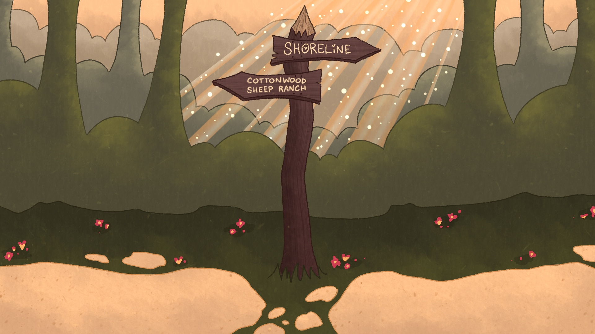

Choose Your Own Adventure: Gapachi Forest
You are in a whimsical little forest; sunlight streams through the overhead canopies and dapples on the ground in pretty little patterns. You're not entirely sure where you are, but I'm sure you'll manage. In front of you, you see a wooden sign with two arrow signs, both pointing down different paths. Which do you follow?